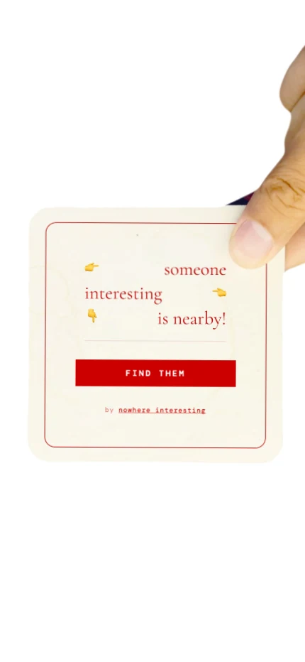
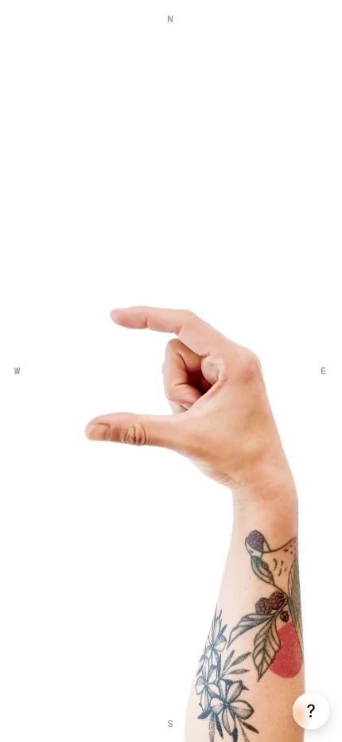
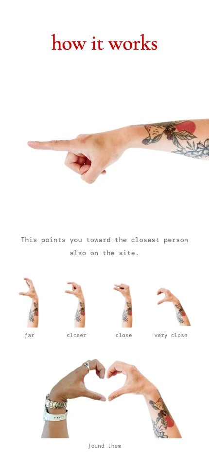
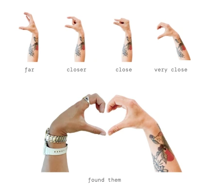

someoneinteresting.online
- Organization
- Nowhere Interesting
Design studio and lab - Role
- Designed and built it
Concept, interface, front end - Built with
- Geolocation
Real-time backend
Photographed hands - Duration
- 2026
A proximity app that points you toward one nearby stranger and tells you nothing else about them. No profile, no photo, no name, no map. Just a hand on your screen, pointing, and a distance that closes as you walk.
I designed and built it end to end: the concept, the interface, the photography, and the front end streaming live position through a lightweight real-time backend.
Dating and social apps are sorting problems. You scan, you judge, you skip. I took away everything there is to sort on, which leaves the part that was always the hard bit: actually going.
What I did
- A direction, not a map
- Give someone a map and they'll plan a route, size up the neighbourhood, and talk themselves out of it. A bearing leaves you one thing to do: turn until it points ahead, then walk.
- Distance as a gesture
- Proximity shows up as a hand rather than a number. It spreads wide when they're far off and pinches closed as you get near, so you feel the gap shrinking without reading anything.
- Withheld everything else
- No name, no photo, no bio, no chat. Every field I left out is one fewer reason to decide in advance that this person isn't worth the walk.
- The arrival moment
- Designed for the point where the app stops being useful: two hands meeting, a count of how many people have found each other, and then it leaves you alone.
- Built the thing
- Geolocation and device heading streamed through a lightweight real-time backend, with the pointing hand driven off live bearing instead of a periodic refresh.
- Shot the hands
- Photographed instead of illustrated. A real hand pointing at you feels like a person on the other end. An arrow feels like software.
Selected work



Distance, as a hand closing
Far, closer, close, very close, and then two hands forming a heart when you find each other. The gesture does the work a number would, without making you read one.

Where it stands
Live at someoneinteresting.online. It needs enough people around for someone to actually be nearby, so it works in cities and falls flat everywhere else.
It's a small experiment about presence and chance — what meeting someone turns into once you remove everything that lets you decide about them first.
1
Person shown at a time — the closest, and only the closest
0
Names, photos, bios, or messages exchanged before you meet
4
Hand positions carrying the entire distance scale